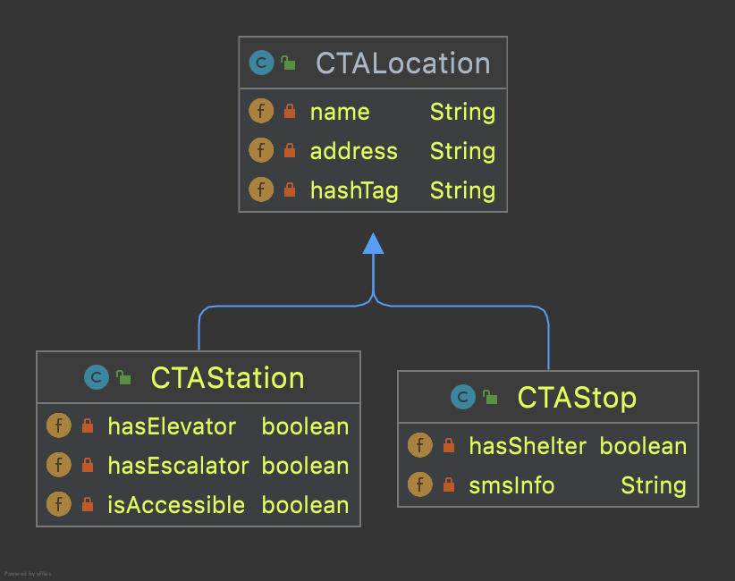
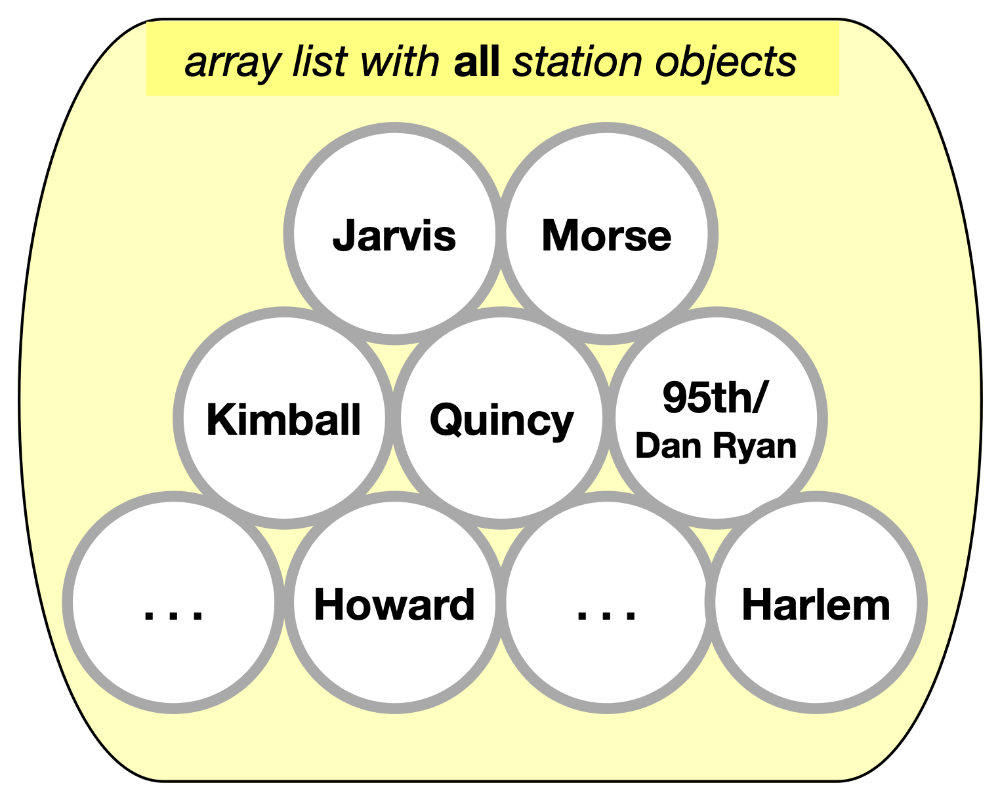
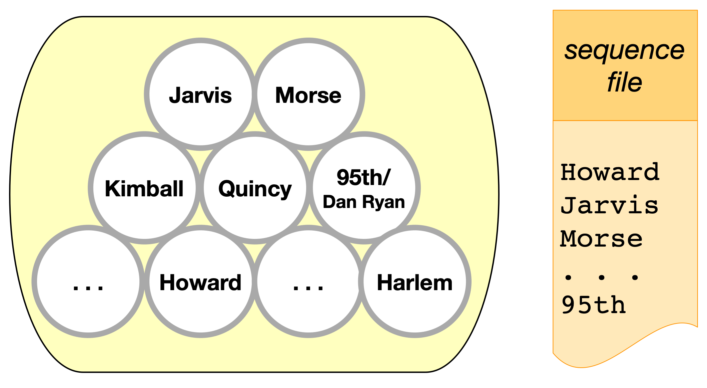
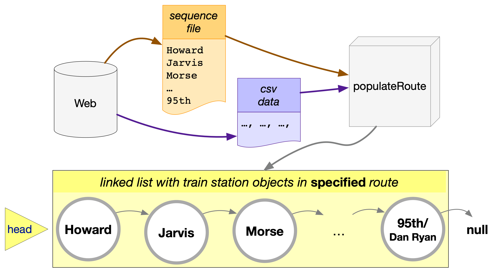
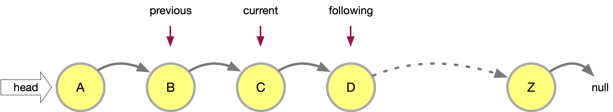
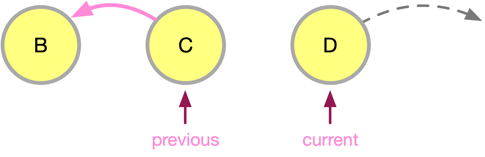

The CTA Class#
The CTA class is a nice playground to explore interfaces and inheritance. The class is based on data about the train and bus services offered by the Chicago Transit Authority. The data are available from the city’s data portal. This example requires some familiarity with CTA train and bus routes, so if you are not a Chicago resident you may want to open a map!
We begin with a simple model: one superclass for locations, extended by two class one for train stations and one for bus stops. The class diagram is shown below.

The next step is to expand class CTALocation with two more fields:
private double latitude, longitude;
that capture the geographic coordinates of a location. These coordinates are part of a CSV file with station information that is available from the Chicago Data Portal. This expansion may necessitate a new constructor for the class:
public CTALocation(String name, double latitude, double longitude) {
this(name);
this.latitude = latitude;
this.longitude = longitude;
}
The highlighted line above is a call to the class’s basic constructor. Once that basic constructor initializes the object, the constructor above assigns values to the latitude and longitude fields.
Implement an interface#
The next step in this mini-project was to implement the Comparable interface in CTALocation:
public class CTALocation implements Comparable<CTALocation> {...}
When a class implements an interface, it promises to include the behavior outlined in the interface. The interface is really a list of method signatures. The implementation of these methods is left to the programmer. The interface (should) provide extensive commentary for each method signature it contains, communicating to programmers how to best implement the methods.
The Comparable interface, for example, lists only one method. The documentation for that method is sufficient to help a developer write suitable code. We know that the method must return a negative integer number if the invoking object (this) is less than the passed object; zero if they are equal, and; a positive integer is the invoking object is greater. Based on this information we can set up a skeleton method and complete it step-by-step.
public int compareTo(CTALocation other) {
double thisDistance = distance(this.latitude, this.longitude, ...);
double otherDistance = distance(other.latitude, other.longitude, ...);
return (int) (thisDistance-otherDistance);
}
We don’t know yet how method distance, shown above, works but we can assume that it returns the distance between downtown Chicago and a location specified by latitude and longitude. The important thing is the return line above. Consider the following invocation of the method:
int x = ohare.compareTo(western);
and assume that ohare and western are CTALocation objects for the CTA stations at O’Hare airport and on Western (and Lawrence) avenue. Intuitively, we know that O’Hare is further away from downtown that Western. Indeed, the O’Hare station is about 15.5 miles from downtown; the Western station, 6.5 miles. We can verify these distances with a tool like Google Earth. Based on that, we expect variable x above to be positive, with a value of 8 or 9, depending on the exact distances and their difference.
Help is always given to those who ask for it#
All that remains is the method that computes the distance from downtown. At this point the programming becomes highly specialized and we must ask for help. Help is always given at Loyola to those who ask for it. The distance method is shown in the next section. It computes the distance between any two points on earth, specified by the respective latitudes and longitudes. We need to compute distances from downtown, so we can overload the method as follows.
static double distance(double lat, double lon) {
final double MADISON_STATE_LAT = 41.882067;
final double MADISON_STATE_LON = -87.6283605;
return distance(lat, lon, MADISON_STATE_LAT, MADISON_STATE_LON);
}
Alternatively, we can overload distance by passing a CTALocation object and let the method pull the data, as follows:
static double distance(CTALocation ctaLocation) {
final double MADISON_STATE_LAT = 41.882067;
final double MADISON_STATE_LON = -87.6283605;
return distance(ctaLocation.latitude, ctaLocation.longitude,
MADISON_STATE_LAT, MADISON_STATE_LON);
}
Of course, we can skip overloading altogether by writing the Madison and State coordinates as private, static, final variables in class CTALocation, and then invoke distance in method compareTo as follows.
public int compareTo(CTALocation other) {
double thisDistance = distance(this.latitude, this.longitude,
MADISON_STATE_LAT, MADISON_STATE_LON);
double otherDistance = distance(other.latitude, other.longitude
MADISON_STATE_LAT, MADISON_STATE_LON);
return (int) (thisDistance-otherDistance);
}
The distance method#
1 /**
2 * Compute Great Circle distance between two points on Earth.
3 *
4 * Usage:
5 *
6 * double dist = distance(lat1, lon1, lat2, lon2)
7 * ---------- ----------
8 * | |
9 * | Geographic coordinates
10 * | of second point, in degrees
11 * | of latitude and longitude.
12 * |
13 * Geographic coordinates
14 * of first point, in degrees
15 * of latitude and longitude.
16 *
17 * Based on the haversine formula (https://en.wikipedia.org/wiki/Haversine_formula):
18 *
19 * d = 2 * r * arcsin(sqrt(
20 * hav(lat2-lat1) +
21 * cos(lat1)*cos(lat2)*hav(lon2-lon1)
22 * ))
23 *
24 * where hav is the haversine function, hav(x) = sin^2(x/2).
25 *
26 * The computed distance is subject to slight numerical errors because (a) the formula
27 * assumes that Earth is a sphere, when it is not, and; (b) Math's toRadians is prone
28 * to rounding errors.
29 *
30 * @param lat1 Latitude of first point
31 * @param lon1 Longitude of first point
32 * @param lat2 Latitude of second point
33 * @param lon2 Longitude of second point
34 * @return distance between two points
35 */
36 static double distance(double lat1, double lon1, double lat2, double lon2) {
37
38 // Radius of earth, in miles. Use 6371 to compute in kilometers.
39 final double EARTH_RADIUS = 3958.8;
40
41 /*
42 Convert latitudes to radians (the unit used by Math's trig functions). No such conversion
43 is needed for the longitude values because they are not used individually in a trigonometric
44 function. Instead, convert their different to radians to use in the second hav() function.
45 */
46 lat1 = Math.toRadians(lat1);
47 lat2 = Math.toRadians(lat2);
48
49 // Latitude difference for hav function (they are already in radians)
50 double deltaLatitude = lat2-lat1;
51 // Longitude difference for hav function (converted to radians)
52 double deltaLongitude = Math.toRadians(lon2 - lon1);
53
54 /*
55 Build haversine formula step-by-step, for clarity. First compute the haversine functions
56 for latitude and longitude using the substitution hav(x) = sin^2(x/2). Next, assemble the
57 trig expression that goes the square root. And finally build the formula.
58 */
59
60 double latHav = Math.pow(Math.sin(deltaLatitude/2.0), 2.0);
61 double lonHav = Math.pow(Math.sin(deltaLongitude/2.0), 2.0);
62 double cosines = Math.cos(lat1)*Math.cos(lat2);
63 double underRoot = latHav + cosines*lonHav;
64
65 // Return value, assigned negative in case we fail to compute formula
66 double d = -1.0;
67 if (underRoot >= 0.0)
68 d = 2 * EARTH_RADIUS * Math.asin(Math.sqrt(underRoot));
69 return d;
70 } // method distance
Building a train route#
As our CTA project continues to grow, we have designed and build quite some useful tools. In addition to method distance above, class CTAUtilities has one more useful method: pullCTAData. This method reads a CSV file, creates CTAStation objects, and stores them in an arraylist. There are about 100 stations in the CTA system. Each of them is described in a detailed CSV file that is available from the Chicago Data Portal. Method pullCTAData creates about 100 CTAStation objects, complete with station name, latitude and longitude, ADA accessibility, etc. The method access the CSV file with the help of another method, CTAScanner that establishes a Scanner connection to the data.
The output of pullCTAData is an ArrayList<CTAStation> collection, illustrated below.
{kind=link}

This collection of station objects is not very useful by itself. Train stations are located along train routes. If we want to construct a train route, we need to know the order in which it traverses stations. For example, the southbound route for CTA’s Red Line travels from Howard, to Jarvis, to Morse, …, and ends at the 95th/Dan Ryan station. For an accurate representation of the Red Line, we need to select some stations from the collection above, and place them in a specified order. To do that, we need a list of the stations to select and the order to place them. And because this information is not available in the CSV file, we have to provide ourselves. The easiest way to do this, is to write a plain text file with just the names of the stations in the order they should appear. That’s the sequence file below (also available on GitHub).
{kind=link}

With that sequence file, we can execute a simple procedure as follows:
Create a trainRoute:
for every station name from sequence file:
find the corresponding station object in the array list
add the station object to the trainRoute
return trainRoute
This simple procedure can be implemented with the following method. The method, if successful, returns a CTATrainRoute object, which is essentially a linked list. To build the train route, the method first creates a collection of all stations, as described above. This collection is ArrayList<CTAStation> allStations. Its contents are assigned with the pullCTAData method in line 9 below.
For every station name pulled from the sequence file, we search every station in the collection allStations to find a matching one. The match is determined by comparing the name pulled from the sequence file and the name field of the CTAStation objects in allStations (line 17, below).
1public CTATrainRoute buildRoute(String linkToSequenceFile) {
2 // Set up the train route object we'll be returning.
3 CTATrainRoute ctaTrainRoute = new CTATrainRoute();
4 // Set up a scanner to the file with the station sequence.
5 Scanner sequence = CTAUtilities.CTAScanner(linkToSequenceFile);
6 // If null, we can't connect to file.
7 if (sequence != null) {
8 // Pull all stations into an array list.
9 ArrayList<CTAStation> allStations = CTAUtilities.pullCTAData(ALL_STATIONS_CSV);
10 // Go through the sequence file, line by line.
11 while(sequence.hasNext()) {
12 // Each line in the sequence file is the name of a station.
13 String nameFromSequence = sequence.nextLine();
14 // Use the enhanced for-loop go over the CTAStation objects in the array list.
15 for (CTAStation station: allStations) {
16 // If a CTAStation has the same name as what we get from sequence, add the object to the route.
17 if(station.getName().equals(nameFromSequence)) {
18 ctaTrainRoute.add(station);
19 }
20 }
21 }
22 }
23 // Return the (hopefully populated) route.
24 return ctaTrainRoute;
25} // method buildRoute
The process in method buildRoute above, can be visualized as follows.
{kind=link}

The method receives data from two sources: the CSV file with all stations and the text file with the sequence of station in a particular route. Using the data from these sources, method buildRoute creates a CTATrainRoute object with a starting station object (the head node), pointing to the next station object, and so on. The last station in the route can be recognized by its .next pointer set to null.
One last thing to discuss about buildRoute is its place: do we add this method in the CTAUtilities class or somewhere else? Our initial choice may be CTAUtilities. But when we look closer, we see that method buildRoute is basically a construction process for a new train route object. Not quite a constructor but we could turn it into such, with a few minor edits. Because the method is so close related to the CTATrainRoute class, it should be placed there.
Reverse a route#
This is an interesting problem: can we reverse a route while traversing it forward? One analogy would be to board a southbound train, and by the time it reaches its destination, have its stations written in the northbound direction. We can accomplish this with pen and paper, writing station names from the bottom of the page and moving up. If something can be done on paper, it can be done with coding! Here’s how.
We start with a plain traversal. In addition to the all familiar by now current pointer, we employ two more points: previous and following.
{kind=link}

Pointers previous and following help us remember what is before and after the current station. When current moves to a new station, we can assign following = current.getNext(). Then we can “disconnect” current from following by reassigning current.setNext(previous). We are ready to advance to the next node. Because current now points backwards, we cannot use its .next to find where to move next. That’s why we need the pointer following to remind us where to go. And thus following becomes current as shown below.
{kind=link}

The basic mechanism is straight forward. Pointer following keeps track of where to slide the current pointer. Usually, we really on current.getNext() to traverse down the route. Here, however, we reassign current’s next field to point to its previous node. Invoking getNext() on current will send us backwards. Pointer following comes to our rescue. The basic code is below:
1CTATStation current = head;
2CTAStation previous = null;
3CTAStation following = null;
4while (current != null) {
5 following = current.getNext();
6 current.setNext(previous);
7 previous = current;
8 current = following;
9}
Every train route has two special stations. Correspondigly every linked list has two special nodes: the head and the end. We need to take extra care to process them. After we complete the loop above, pointer head still points to the first station of the original route. We want it to point to the first station of the reversed route. Luckily, pointer previous is already at the last station of the original route (which is the first station of the reversed route). So we assign head = previous.
The second special case is the last node of the reversed list, the last station of the reversed route. That’s the head of the original structure. Notice, in the code above, that where we are at the beginning, when current is the head, previous is null. And the assignment of line 6 above reassigns that station to point to null: making it the last station of the reversed route.